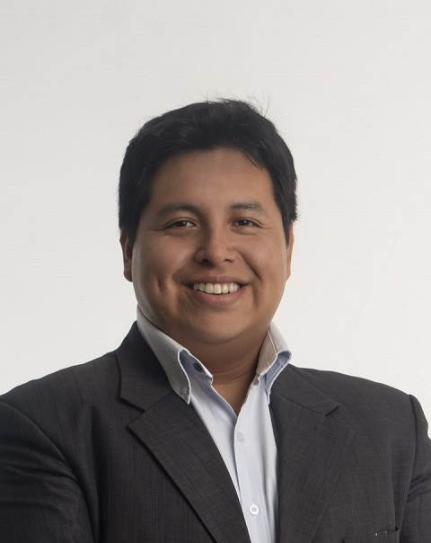
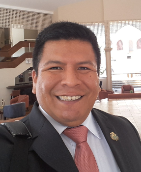
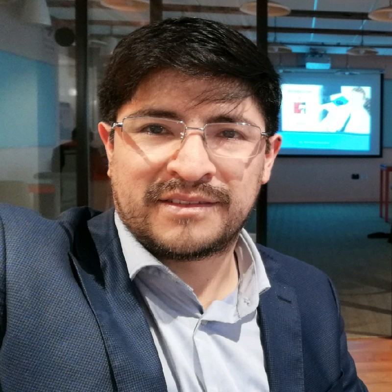

Board of Directors
In March 2023, HL7 International authorized the creation of this exciting association. Ten visionary board members joined together to form the powerful Board of Trustees, charged with leading this institution for an exciting to lead this institution for an exciting 4-year period.
HL7 Peru is ready to revolutionize the healthcare field and set new standards at the national and international level. national and international level.
Directory

Styp Bill Roy Canto Rondón

Chair
- Consultant in digital health innovation projects
- Telecommunications Engineer by profession, with more than 12 years of experience, 8 of them in the field of e-Health. of them in the field of digital health, vast specialization in the area of Telemedicine. Telemedicine; elaboration and implementation of projects related to software development and installation of software development and installation of computer, electronic and biomedical equipment.
- Technology driver related to Digital Transformation, eHealth, Interoperability, Cloud Computing, Big Data, Data Intelligence, Artificial Intelligence, Telemedicine, Web Telemedicine, Front-end and Back-end Web Development, web services, SOAP-REST SOAP-REST, Content Management Systems, Telecommunications Networks, Mobile Communications, Information Security Mobile Communications, Information Security, Project Management and Public Investment Projects. Project Management.
- Member of the Specialized Committee of Health Technologies of the Chapter of Engineering of the CD Lima-CIP.
- Member of the International Organization of Telemedicine and Telehealth.
- Courses and internships related to Telemedicine specialization topics in various different countries such as South Korea, Colombia, Mexico, Brazil and United Kingdom.
Pilar Rossana Rivas Tarazona
Co-chair
- MSc Management, Direction, Organization and Strategy-Univ.Jean-Moulin-Lyon-III, FRANCE; full doctoral studies in Health Innovation-Ecole des Mines de Paris, FRANCE; Diploma in Health Sciences Paris, FRANCE; Diploma of Specialization in Health Sciences-Université Catholique de Louvain-BÉLVIN-III, FRANCE; full doctoral studies in Catholique de Louvain-BELGIUM; 15 years in Biomedical Eng. Technology Assessment and Digital Health with use of medical devices. Professor and Researcher.
- Consultant at World Health Organization-WHO Collaborating Center for HTM, UVM, USA. International Consultant in Biomedical Engineering, Clinical Engineering, Technology Assessment and Digital Health Digital Health with use of medical devices.
- Elected Board de Clinical Engineering Division y Health Technology Assessment Division de International Federation of Medical & Biological Engineering-IFMBE, USA; Board de Health Technology Assessment for the Americas-RedETSA, Panamerican Health Organization-PAHO,USA; Member: American College of Clinical Engineering-ACCE, USA.
- Member of the Specialized Committee on Health Technologies; Electronic Engineering Chapter of CD Lima-CIP, PERU. Electronics Chapter of CD Lima-CIP, PERU.

Gabriel Augusto Castro Ormeño
Secretary .
- Medical Surgeon and Business Administrator(e)
- Graduate of the Master's Degrees in Teaching and Research in Health and Occupational and Environmental Medicine. Occupational and Environmental Medicine.
- Diploma in Quality in Health, Occupational Health and Health Services Auditing. Audit of Health Services.
- Studies in agile project management and data science.
- Professor of Human Medicine at the Universidad Científica del Sur (UCSUR).
- Physician at the National Center of Occupational Health and Environmental Protection for Health (CENSOPAS) at the National Institute of Health of Peru (INS-PERU). Health (CENSOPAS) at the National Institute of Health of Peru (INS-PERU)./li>
- Former President of the Committee of Information and Communication Technologies in Health (TICS) of the Peruvian Medical Health (TICS) of the Medical College of Peru (CMP) Regional Council III- Lima..
- Founding Member of the Health Quality Association of Peru (ASOCALP).
- Invited expert member of the Health Technology Management Commission of the College of Engineers of Peru (CIP), Lima Departmental Council. of the College of Engineers of Peru (CIP), Lima Departmental Council.

José Sebastián Ibarra Arregui
Treasurer
- Graduated in Biomedical Engineering at Pontificia Universidad Católica del Perú (PUCP) and Universidad Peruana Cayetano Heredia (UPCH).
- Trainee Technical in the area of Education and Clinical Applications at Siemens Healthineers Peru.
- Researcher and associate thesis student in the Rural Telecommunications Group - GTR PUCP. GTR PUCP. Research on Telehealth and Rural Telemedicine.
- Treasurer of the HL7 Peru Association, founding member.
- Founding member of the IEEE UPCH Student Branch in 2019.
- Founding member of the Biomedical Engineering Student Association in 2020. as vice president.
Cynthia Téllez Gutiérrez
Vocal
- Legal consultant in Personal Data Protection, Law and Internet.
- Certified Data Protection Expert by the Institute of Audit & IT-Governance.
- Lawyer from Universidad Nacional Mayor de San Marcos.
- Master in Legal Security and Computer Security in Digitalized Societies at the University of Lille 2
- Graduate of the Master's Degree in Information Technology Management from the Universidad Peruana de Ciencias Informáticas.
- She was a university professor at the UNMSM, at the Graduate School of the University of Lima and others. de Lima and others. Coordinator of the DateaSeguro initiative in Peru.
- Master's Degree in Business Law at Toulouse 1 University (France). Internship at Estudio de Abogados Écija (Madrid-Spain).
- Accésit Award 2014 of the XVIII Edition of the Spanish Data Protection Awards Personal Data Protection Awards of the Spanish Agency for the Protection of Personal Data with a group research text. group research.
- Speaker at various events on personal data protection and law..
- Consultant hired to draft the preliminary draft of the Regulations of the Telehealth Framework Law.
- External legal advisor invited by the Ministry of Justice for the elaboration of the Personal Data Protection Law.
- She was Head of the Personal Data Protection and Access to Information Division at Iriarte & Asociados.
- Member of the Civil Law and Civil Procedure Projects Area at Grijley Legal Publishing House.

Miguel Sebastián Egoavil Ayala
Vocal
- Physician-Surgeon and graduate of the Master in Biomedical Informatics in Global Health, both from the Universidad Peruana Cayetano Heredia.
- More than 10 years of experience in the implementation of Digital Health projects (Telehealth, Interoperability, Artificial Intelligence, among others). (Telehealth, Interoperability, Artificial Intelligence, among others), both at the level of academia academia (research projects), as well as in the private sector.
- Postgraduate studies in Big Data and Machine Learning (UTEC), Health Information Systems (Universidad de Chile) and Project Management (Universidad ESAN). (ESAN University).
- In the private sector, as Medical Director of Medical Innovation & Technology, he implements Telehealth projects for rural areas within the framework of corporate social responsibility. and currently I am Telemedicine Manager of Bupa Global Latin America.

Javier Alejandro Santisteban Romero
Vocal
- Systems Engineering Professional with specialization in Project Management and Business Intelligence. Project Management and Business Intelligence.
- Twenty years of experience in public management in the health sector at the national government level; with a strong background in strategic planning with solid knowledge in strategic planning, process management and social and economic development projects and social and economic development projects, oriented to generate public value.
- With extensive experience in the formulation and implementation of regulations, design and and management of customer service platforms, strengthening plans, information management and plans, information management and digital transformation.
- Defined human values and able to work in a team and independently, according to the needs of the organization; lecturer and with publications on social development issues in Peru. on social development issues in Peru.

Marcelino Esteban Andía Ticona
Vocal
- Dental Surgeon, Master in Administration, PhD in Education
- Specialization Diploma in Digital Governance and Management
- Diploma in Business Process Management with Bizagi
- Diploma in Health Technologies Management
- Certificate Scrum Foundations, Scrum Master
- Member of the Technical Team of the Office of Innovation and Development of the General Office of Information Technologies of the Ministry of Health of Peru. General Office of Information Technologies of the Ministry of Health of Peru.
- Specialist member of the Technical Committee for Standardization 129 Health Informatics for the National Institute of Quality (INACAL).
- Undergraduate and Postgraduate University Professor UNMSM, UPSJB

Jose Luis Huaman Villar
Vocal
- Systems Engineer with more than 20 years of experience in IT management, governance and digital transformation, enterprise architecture governance and digital transformation, enterprise architecture, service-oriented architecture, project management, process management, cybersecurity, information security, cloud computing technologies, disruptive technologies with blockchain, technologies with hyperconverged computing. computing.
- Implementer of sectorial platforms of interoperability such as the Platform for Interoperability in Health - PIDSALUD (supporting international semantic and syntactic semantic and syntactic standards), Platform for the Electronic Health Record Repository - RENHICE Electronic Health Record Repository - RENHICE, Platform for digital and electronic signature, Platform for the Registry of Affiliates to the Universal Health Insurance - RAUS, Platform for the Health Accreditation Model, among others, using both OnPremise and Cloud environments. environments both OnPremise and Public and Private Cloud; in the same way, the use of interoperability interoperability standards such as X12N, HL7, HL7 FHIR.
- Member of the HL7 Peru Chapter, DAMA Peru Chapter training team.

Jhon Henry García Ruiz
Vocal
- Consultant and entrepreneur with more than 12 years of experience in the private and public sector. public sector. Specialist in Digital Health (Electronic Health Record / TeleHealth / Interoperability - HL7). Interoperability - HL7); by profession Systems and Computer Engineer with Master in Business Administration - UTP and Master in Software Engineering - UNMSM. Engineering - UNMSM.
- Executive and General Manager (2016-2019) of Telehealth and Information Technology. technologies. I contributed to the elaboration of the basic regulatory framework for the processes National Registry of Electronic Health Records and Telehealth (Legislative Decrees N° 1306 - and (Legislative Decrees N° 1306 - and N° 1303 - respectively) and interoperability, among others.
- He collaborates with non-profit organizations such as the Lima Departmental Council of the Peruvian Association of Engineers of the Peruvian College of Engineers - as Expert Member - Health Technologies Commission. for Health. I am a member of the HL7 Peru Association and an Associate of the Peruvian Peruvian Association of Free Software APESOL.